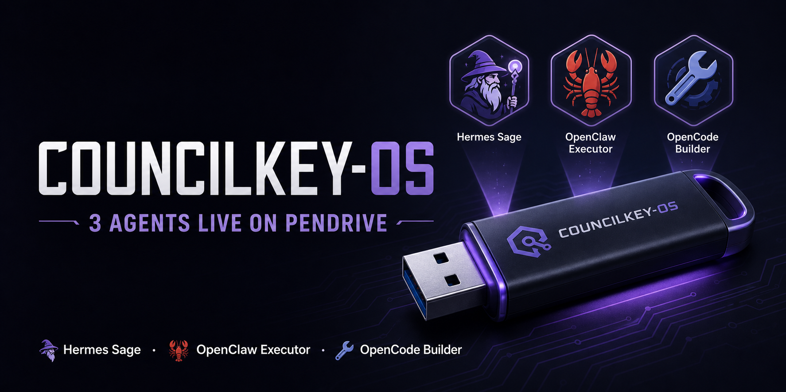
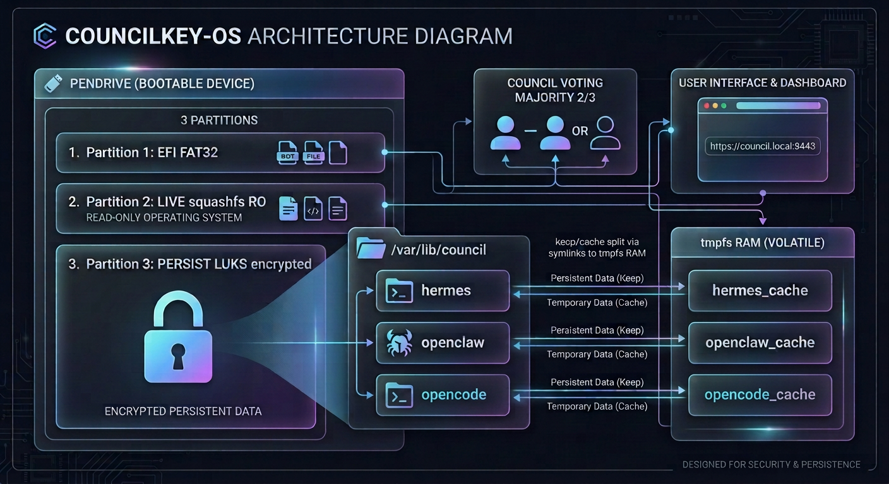
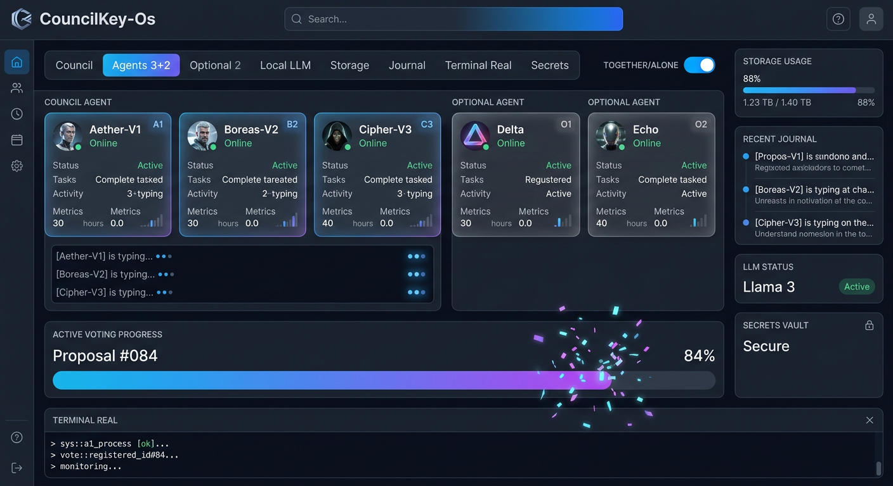
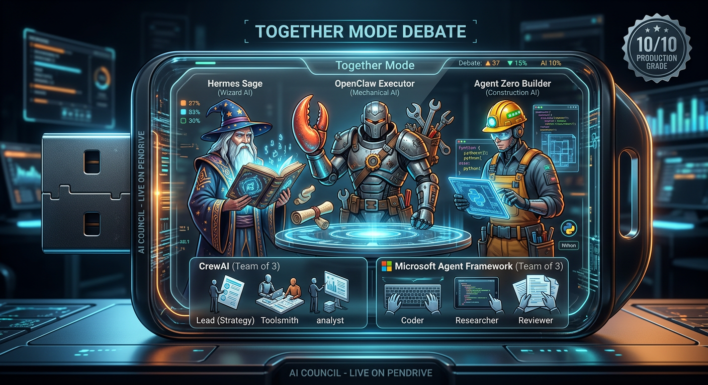
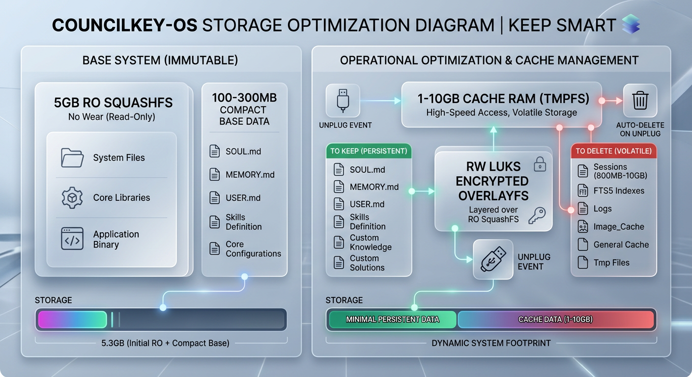
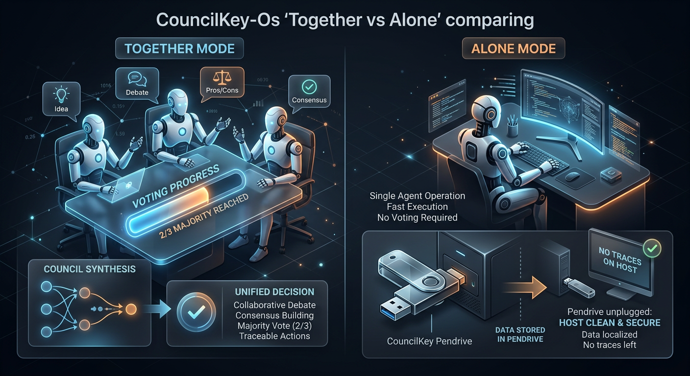
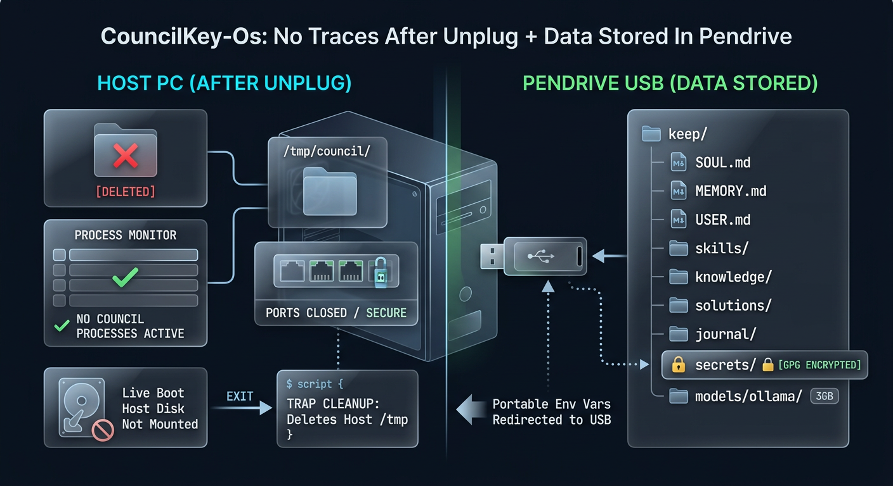
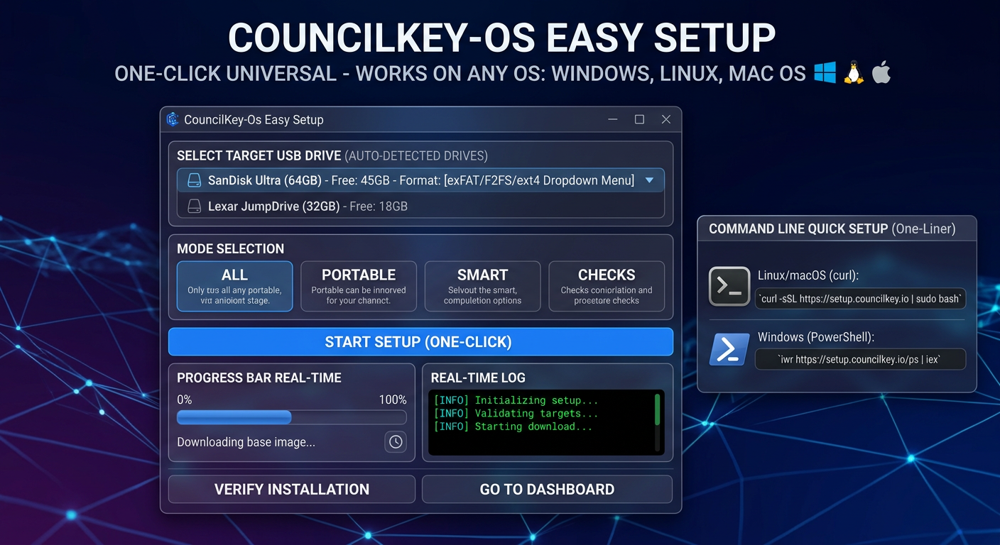
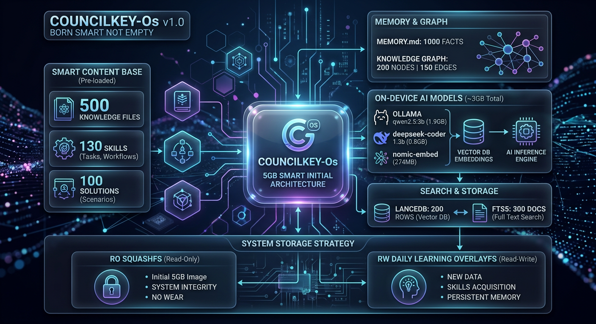

3 Agents Live on a Pendrive
Plug any PC → Boot CouncilKey → 3 agents debate & vote → Unplug, heavy junk auto-deleted, smart learning kept → Faster next time. Together + Alone + No Traces + Data In Pendrive + 5GB Smart + Windows Universal.

3 agents work together debate+vote 2/3 approve (default, safer) + Alone solo if user wants, faster, works alone too. Solo direct: council hermes "prompt"
council ask --mode together "Build website"
council ask --mode alone --agent hermes "Research quantum"
Portable env redirect to USB + clean shell --norc --noprofile + trap cleanup EXIT deletes host /tmp/council/* + sync. Live Boot host disk not mounted. Verified 6 PASS 0 FAIL.
bash scripts/verify-no-traces.sh
Data: USB/config/council/keep/ LUKS encrypted
Smart storage: distilled knowledge (memory, skills, knowledge graph, vector index) kept on the pendrive; heavy caches auto-deleted on unplug.
make build-smart-initial
make download-models (3GB)
make build-smart-5gb
4 launchers same code: start.py universal Python + start.ps1 PowerShell v2 Windows Native++ with GUI + start.sh Linux/macOS + start.bat Windows batch. Works on any OS.
Double-click start.bat (Windows)
bash start.sh (Linux/macOS)
python3 start.py (Any OS)
Core 3 Always + Optional 2 More: CrewAI 300MB Port 18791 + Microsoft Framework 800MB Ports 18792-18794 + 3 sub-agents = 6-7 agents total if both, download if user wants.
council agents install all
council ask --mode together --agents 5 "Build website"
Ollama server 11434, models qwen2.5:3b 1.9GB + deepseek-coder 1.3b 0.8GB + nomic-embed 274MB = 3GB, offline no API keys needed, LLM Judge via local Ollama, vector DB RAG LanceDB + FTS5.
councilkey doctor
councilkey storage
Ollama model management (pull / ensure / delete)
8 tabs: Council, Agents 3+2, Optional 2, Local LLM, Storage, Journal, Terminal Real (xterm.js + WebSocket + PTY), Secrets + Together/Alone toggle + Tailwind animations + Framer Motion glassmorphism + 3D dashboard.
council dashboard --port 8443
https://localhost:8443 - 8-tab dashboard
One-liner curl | bash + PowerShell iwr | iex + GUI setup-gui.py + setup-easy-one-click.py single file + setup-windows-easy.bat double-click does everything + make easy-setup + make check-all 9 checks .
curl -fsSL .../install.sh | bash -s -- /mnt/council all
iwr -useb .../install.ps1 | iex
AppArmor profiles per Quadlet + F2FS + QEMU + Backup Full GPG Remote + Tailscale Auto + Secure Boot shim + Real Terminal PTY + Optional Real + Real TF-IDF + 5GB Smart + Universal OS + Time Estimates + Multiple Checks.
11 tests PASS + 6 PASS no traces
AppArmor + F2FS + QEMU + Backup GPG + Tailscale
Futuristic, dark mode, neon purple blue gradient, glassmorphism, pendrive USB with glowing council logo

EFI FAT32, LIVE squashfs RO, PERSIST LUKS encrypted, keep/cache split, council voting

Together/Alone toggle, typing indicators, voting progress bar animated, storage bar, agent cards

Hermes Sage, OpenClaw Executor, Agent Zero Builder + CrewAI + Microsoft Framework 3 sub-agents

Keep 100-300MB + 5GB RO vs Cache RAM 1-10GB auto delete, RO no wear + RW daily learning

Left Together 3 agents debating voting, Right Alone solo faster, Data in pendrive No traces

Host PC clean /tmp/council/* deleted, no processes, ports closed + Pendrive data keep/ SOUL MEMORY USER skills/

Works on Any OS Windows+Linux+macOS, GUI auto-detect USB, format options, progress bar, one-liner curl | bash

500 knowledge, 130 skills, 100 solutions, MEMORY.md 1000 facts, knowledge graph 200 nodes, LanceDB 200 rows + 3GB models + 500MB embeddings
Windows: Explorer → Format → exFAT → Label COUNCIL
Linux: sudo mkfs.exfat -n COUNCIL /dev/sdX1
macOS: Disk Utility → exFAT
Linux/macOS: curl -fsSL .../install.sh | bash -s -- /mnt/council all
Windows PowerShell: iwr -useb .../install.ps1 | iex
GUI: python3 setup-gui.py
Unplug → Plug into any PC → Double-click start.bat/start.ps1/start.py
Together: council ask "Build website"
Alone: council ask --mode alone --agent hermes "Research"
Dashboard: https://localhost:8443